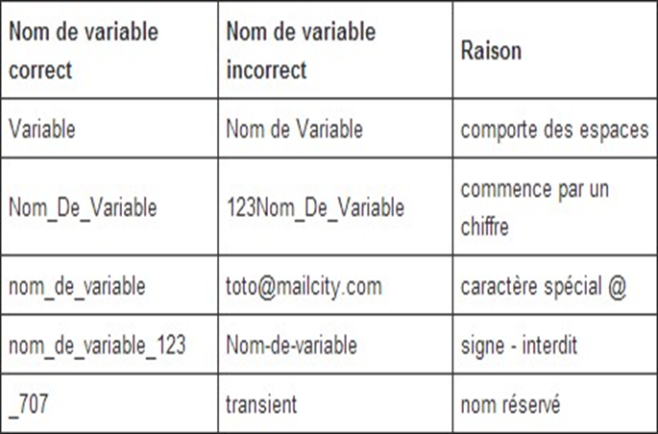
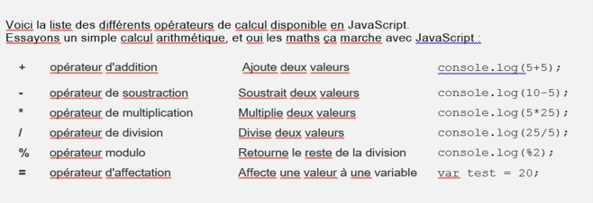
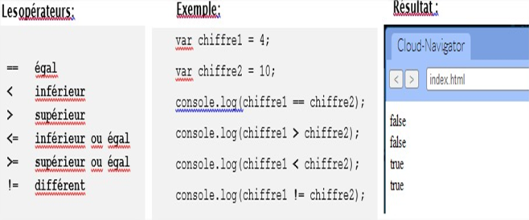
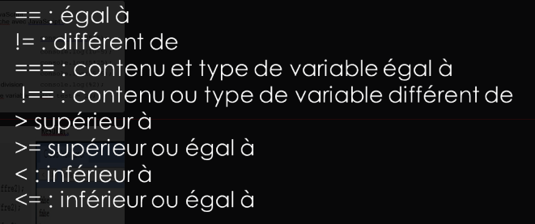
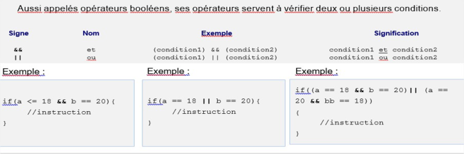
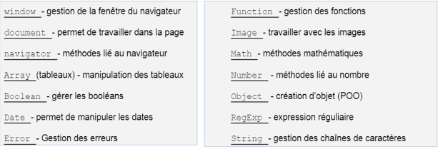

JavaScript
Regarde dans inspecter -> console : le code JS apparait, et en bleu à droite l'emplacement (ici : hello apparait dans app.js, ligne3)
les noms de variables valides

les opérateurs de calcul

les comparateurs


les opérateurs logiques

OU exclusif (l'un ou l'autre mais pas les 2) : (a ^ b)
les objets prédéfinis

documentation officielle des fonctions mathématiques
documentation officielle des fonctions tableaux
documentation officielle des fonctions date